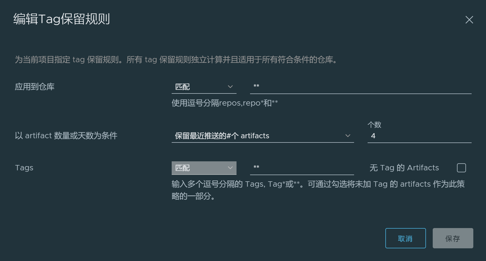
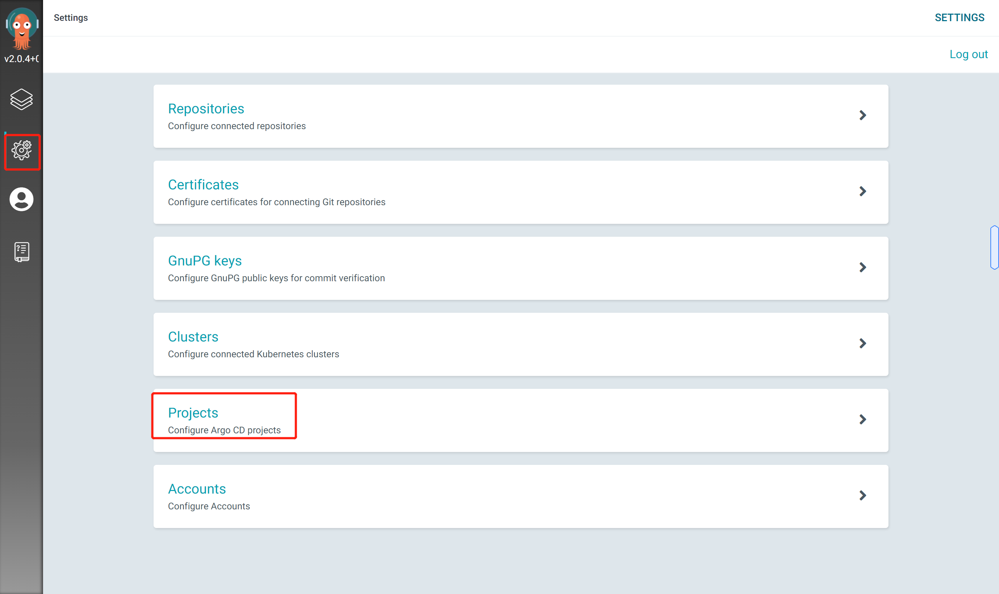

Argo CD

简介
Argo CD是什么？
Argo CD是一个基于Kubernetes声明性的GitOps持续交付工具
为什么使用
Argo CD
声明式定义应用程序、配置和环境，并且是版本控制的
应用程序部署和生命周期管理是自动化的、可审计的和易于理解的
工作原理
Argo CD遵循GitOps模式，使用Git存储库作为定义应用程序期望状态的数据源。
Kubernetes应用清单可以通过以下几种方式指定:
- kustomize应用
- helm应用
- ksonnet应用
- jsonnet
- 带有
yaml|json清单的目录 - 任意自定义配置管理工具|插件
Argo CD可以在指定的目标环境中自动部署、维护期望的应用程序状态，该期望状态由清单文件定义。
应用程序清单版本可以基于Git提交时跟踪对分支、tag或固定到特定版本的Git commit。
Argo CD基于kubernetes控制器实现，它持续监控运行中的应用程序，
并将当前的活动状态与期望的目标状态(如Git repo中所指定的)进行比较。
如果已部署的应用程序的活动状态偏离目标状态，则将被视为OutOfSync。
Argo CD可视化展现程序状态差异，同时提供自动或手动同步工具。
特性
- 将应用程序自动部署到指定的目标环境
- 支持多种应用配置管理工具/模板（
Kustomize, Helm, Ksonnet, Jsonnet, plain-YAML） - 能够管理和部署到多个
k8s集群 - 单点登录（
OIDC, OAuth2, LDAP, SAML 2.0, GitHub, GitLab, Microsoft, LinkedIn） - 用于授权的多租户和
RBAC策略 - 回滚至
Git仓库中指定的commit - 应用程序资源的运行状况分析
- 自动配置漂移检测和可视化
- 自动/手动同步应用至期望状态
- 提供应用程序活动的实时视图的
Web UI - 用于自动化和
CI集成的CLI Webhook集成(GitHub, BitBucket, GitLab)PreSync, Sync, PostSync钩子来支持复杂应用(例如蓝/绿和金丝雀的升级)- 应用程序事件审计和追踪
API调用 Prometheus指标- 覆盖
Git中ksonnet/helm的参数
核心概念
argocd架构示意图

以下argocd概念需要具有Git、Docker、Kubernetes、Continuous Delivery和GitOps相关背景
Application(应用): 基于Kubernetes CRD定义的一组Kubernetes资源清单- 应用数据源类型: 构建应用的工具类型(
helm等) - 目标状态: 描述应用的期望状态（如副本数、配额、调度等），由
git仓库内的应用清单文件描述 - 活动状态: 描述应用的活动状态（如副本数、配额、调度、探针状态等）
- 同步状态: 描述应用活动状态与目标状态同步情况（是否一致）
- 同步: 一个动作，使应用程序（集群内）与目标状态（
git仓库清单文件描述）达成一致 - 同步操作执行的状态: 描述同步动作是否成功
- 刷新: 对比
git仓库内的应用目标状态与活动状态，指出不同之处 - 健康状态: 描述应用程序是否运行正常，可以对外提供服务
- 工具: 创建应用程序清单描述文件的工具（如
helm、Kustomize）
Argo CD中项目是什么？
项目提供了应用程序的逻辑分组，这在Argo CD被多个团队使用时非常有用。项目提供以下特性:
- 限制部署的内容(如可
Git源代码库) - 限制应用部署的位置(目标
k8s集群和命名空间) - 限制可部署或不可部署的对象类型(例如
RBAC、CRDs、daemonset、NetworkPolicy等) - 定义项目角色以提供应用程序
RBAC(绑定到OIDC组和/或JWT令牌)
关于默认项目
每个应用程序都属于一个项目。如果未指定，应用程序属于默认项目，该项目是自动创建的，
默认情况下允许从任何源repo部署到任何集群，以及所有资源类型。
默认业务群组只能被修改，不能被删除。最初创建时，它的规范声明如下:
spec:
sourceRepos:
- '*'
destinations:
- namespace: '*'
server: '*'
clusterResourceWhitelist:
- group: '*'
kind: '*'
部署argocd
下载声明文件
发布
修改文件内镜像引用tag
[root@node1 ~]# grep "image:" install.sh
image: ghcr.io/dexidp/dex:v2.27.0
image: quay.io/argoproj/argocd:v2.0.4
image: redis:6.2.4-alpine
image: quay.io/argoproj/argocd:v2.0.4
image: quay.io/argoproj/argocd:v2.0.4
image: quay.io/argoproj/argocd:v2.0.4
发布创建
kubectl create namespace argocd
kubectl apply -n argocd -f install.yaml
查看部署状态
[root@node1 ~]# kubectl get pod -n argocd -w
NAME READY STATUS RESTARTS AGE
argocd-application-controller-0 1/1 Running 0 113s
argocd-dex-server-764699868-28tmj 1/1 Running 0 113s
argocd-redis-675b9bbd9d-dtbzh 1/1 Running 0 113s
argocd-repo-server-59ffd86d98-2w7k4 1/1 Running 0 113s
argocd-server-6d66686c5c-nqfpf 1/1 Running 0 113s
调整服务类型为
NodePort
kubectl -n argocd expose deployments/argocd-server --type="NodePort" --port=8080 --name=argocd-server-nodeport
获取NodePort
[root@node1 ~]# kubectl get service/argocd-server-nodeport -n argocd
NAME TYPE CLUSTER-IP EXTERNAL-IP PORT(S) AGE
argocd-server-nodeport NodePort 10.233.34.101 <none> 8080:31398/TCP 87s
查看登录口令
kubectl -n argocd get secret argocd-initial-admin-secret -o jsonpath="{.data.password}" | base64 -d|xargs -n1 echo
登录
- 登录地址： http://NodeIP:31418
实践
通过一个样例来说明，argocd是如何结合gitlab与k8s实现应用的cicd流程
关于argocd其他部分内容（用户管理、安全审计、自定义hook）等内容，这里不做过多讨论
相关技术&工具：
gitlab: 存放源代码与应用清单docker: 构建镜像&容器运行时harbor: 镜像制品库，管理镜像jenkins:ci流水线工具k8s: 容器编排工具argocd: 基于k8s的cd工具
流程解析
代码库变更
开发人员提交代码，触发jenkins ci pipeline
ci pipeline执行构建
包含以下步骤：
- 打包构建应用程序
- 构建应用镜像
- 根据
commit id创建镜像tag - 推送至镜像库
- 变更配置库配置
变更配置库配置
ci pipeline最后一个流程，执行以下内容：
checkout配置库- 利用
yq工具变更配置库内yaml清单文件内容（主要为镜像tag） - 提交变更至配置库
cd流程
argocd拉取配置库清单文件，比对内容。
文件发生变更 -> 执行变更 文件未发生变更 -> 继续观测配置库变更
源码库关键文件
源码工程
demo: 基于spring boot工程
Jenkinsfile内容
pipeline {
agent any
environment {
DEMO_IMAGE_TAG="harbor.wl.com/library/demo"
DOCKER_REGISTRY_DOMAIN="harbor.wl.com"
DOCKER_CREDENTIAL_ID = 'harbor-secret'
GIT_CREDENTIAL_ID='d145edf3-929c-4efa-aa46-48ea0cf4336e'
GIT_CONFIG_REPO_URL="192.168.1.1:80/demo-group/demo.git"
}
stages {
stage ('checkout scm') {
steps {
checkout(scm)
}
}
// 获取git提交的commit id
stage('get commit id...') {
steps {
script {
env.GIT_COMMIT_ID = sh (script: 'git rev-parse --short HEAD', returnStdout: true).trim()
}
}
}
// 基于Dockerfile内容构建demo应用镜像，生成两个版本tag：latest && commit id
stage ('build demo image...') {
steps {
sh '''
sudo docker build -t $DEMO_IMAGE_TAG -f Dockerfile .
sudo docker tag $DEMO_IMAGE_TAG $DEMO_IMAGE_TAG:$GIT_COMMIT_ID
'''
}
}
// 推送镜像至本地Harbor库，票据有jenkins管理
stage ('publish image with portal...') {
steps {
withCredentials([usernamePassword(passwordVariable : 'DOCKER_PASSWORD' ,usernameVariable : 'DOCKER_USERNAME' ,credentialsId : "$DOCKER_CREDENTIAL_ID" ,)]) {
sh 'sudo echo "$DOCKER_PASSWORD" | sudo docker login $DOCKER_REGISTRY_DOMAIN -u "$DOCKER_USERNAME" --password-stdin'
sh '''
sudo docker push "$DEMO_IMAGE_TAG"
sudo docker push "$DEMO_IMAGE_TAG:$GIT_COMMIT_ID"
'''
}
}
}
// checkout 配置库
stage ('checkout config repo ...') {
steps {
checkout([$class: 'GitSCM', branches: [[name: '*/master']], extensions: [], userRemoteConfigs: [[credentialsId: "$GIT_CREDENTIAL_ID", url: "http://${GIT_CONFIG_REPO_URL}"]]])
}
}
// 更改demo-config库下demo/demo.yaml文件内镜像tag
// 提交更改至demo-config库
stage ('commit config repo changes ...') {
steps {
withCredentials([usernamePassword(credentialsId: "$GIT_CREDENTIAL_ID", passwordVariable: 'GIT_PASSWORD', usernameVariable: 'GIT_USERNAME')]) {
sh '''
echo "#$GIT_COMMIT_ID#"
tag=$DEMO_IMAGE_TAG:$GIT_COMMIT_ID
tag=$tag yq eval ".spec.template.spec.containers[0].image = strenv(tag)" -i demo/demo.yaml
git add demo/demo.yaml
git commit -m "modify version"
git config --global push.default simple
git push http://$GIT_USERNAME:$GIT_PASSWORD@${GIT_CONFIG_REPO_URL} HEAD:master
'''
}
}
}
}
}
Dockerfile内容
FROM harbor.wl.com/library/maven:3.8.1 AS builder
WORKDIR /usr/local
ADD . .
RUN mvn clean package
FROM harbor.wl.com/library/openjdk-1.8:alpine
COPY --from=builder /usr/local/demo/target/demo-0.0.1-SNAPSHOT.jar /opt/app.jar
EXPOSE 8080
配置库关键文件
demo-config配置库层级及清单内容
层级
demo-config
└── demo
├── demo-svc.yaml
└── demo.yaml
demo.yaml内容：
apiVersion: apps/v1
kind: Deployment
metadata:
name: demo-app
labels:
app: demo-app
spec:
progressDeadlineSeconds: 600
replicas: 1
revisionHistoryLimit: 10
selector:
matchLabels:
app: demo-app
template:
metadata:
labels:
app: demo-app
spec:
containers:
- name: demo-app
image: harbor.wl.com/library/demo:da28fcb
imagePullPolicy: Always
args:
- java
- '-Xms2048m'
- '-Xmx2048m'
- '-jar'
- /opt/app.jar
- '--server.port=8080'
- '--spring.profiles.active=dev'
livenessProbe:
failureThreshold: 10
httpGet:
path: /actuator/health
port: 7002
scheme: HTTP
initialDelaySeconds: 30
periodSeconds: 10
successThreshold: 1
timeoutSeconds: 10
readinessProbe:
failureThreshold: 10
httpGet:
path: /actuator/health
port: 7002
scheme: HTTP
initialDelaySeconds: 30
periodSeconds: 10
successThreshold: 1
timeoutSeconds: 10
ports:
- containerPort: 8080
name: http-8080
protocol: TCP
dnsPolicy: ClusterFirst
restartPolicy: Always
schedulerName: default-scheduler
serviceAccount: default
serviceAccountName: default
terminationGracePeriodSeconds: 30
demo-svc.yaml内容
---
apiVersion: v1
kind: Service
metadata:
name: demo-svc
labels:
app: demo-svc
spec:
ports:
- name: http-8080
port: 80
protocol: TCP
targetPort: 8080
selector:
app: demo-app
sessionAffinity: None
type: ClusterIP
harbor库配置信息
配置镜像清理策略，以免垃圾镜像过多

argocd配置信息
配置仓库
web控制台进入仓库配置界面

点击CONNECT REPO USING HTTPS添加仓库

配置相关信息点击CONNECT

查看项目下仓库状态

配置集群
点击设置->集群

编辑集群信息，namespace值为空（保存后会自动填充为All namespaces）

创建项目（逻辑分组）
点击设置->项目

创建demo项目

配置项目关联的git仓库与k8s集群信息

创建应用
新建应用
配置应用


至此流程配置完毕
样例应用
以下展示实际开发项目的cd应用
应用关联的资源对象

应用同步信息

最佳实践
分离配置库和源代码库
使用单独的Git存储库来保存kubernetes清单，将配置与应用程序源代码分开，强烈推荐使用，原因如下:
- 清晰分离了应用程序代码与应用程序配置。有时您希望只修改清单，而不触发整个
CI构建。 例如，如果您只是希望增加部署规范中的副本数量，那么您可能不希望触发构建（由于构建周期可能较长） - 更清洁的审计日志。出于审计目的，只保存配置库历史更改记录，而不是掺有日常开发提交的日志记录。
- 微服务场景下，应用程序可能由多个
Git库构建的服务组成，但是作为单个单元部署（比如同一pod内）。 通常，微服务应用由不同版本和不同发布周期的服务组成(如ELK, Kafka + Zookeeper)。 将配置清单存储在单个组件的一个源代码库中可能没有意义 - 访问的分离。开发应用程序的开发人员不一定是能够/应该推送到生产环境的同一个人，无论是有意的还是无意的。 通过使用单独的库，可以将提交访问权限授予源代码库，而不是应用程序配置库
- 自动化
CI Pipeline场景下，将清单更改推送到同一个Git存储库可能会触发构建作业和Git提交触发器的无限循环。 使用一个单独的repo来推送配置更改，可以防止这种情况发生。
确保在
Git版本中的清单是真正不可变的
当使用像helm或kustomize这样的模板工具时，清单的内容可能会随着时间的推移而改变。
这通常是由对上游helm库或kustomize库的更改引起的。
以下面kustomization.yaml为例
bases:
- github.com/argoproj/argo-cd//manifests/cluster-install
由于这不是一个稳定的目标，因此这个自定义应用程序的清单可能会突然改变内容，甚至不需要对自己的Git存储库进行任何更改。（比如git master分支）
更好的选择是使用Git标记或提交SHA的版本。例如:
bases:
- github.com/argoproj/argo-cd//manifests/cluster-install?ref=v0.11.1